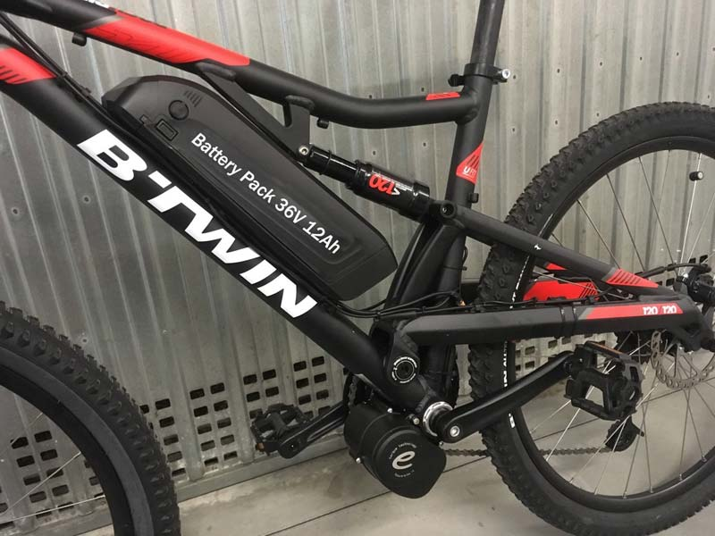
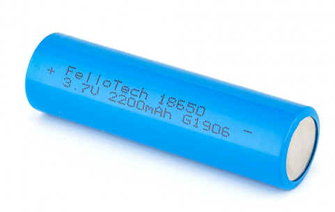
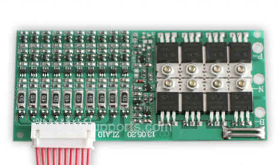
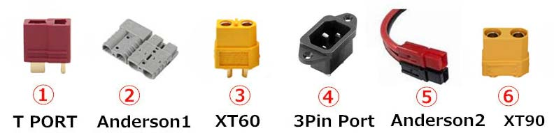
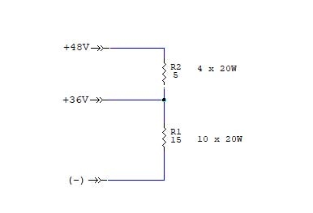
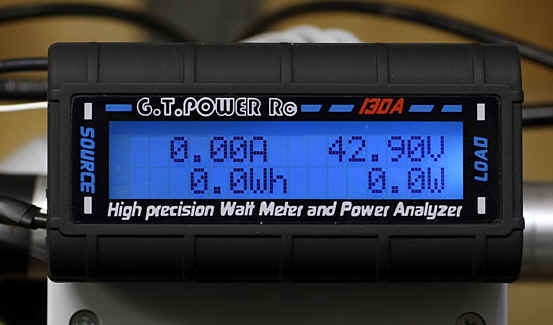

Batteries & energy
E-bike - Extra Pack 36V 48V
Extender with lithium ion batteries. "DIY" by R.Chirio
Page index
CHIRIO.com is available to test and validate your battery packs.
send an email to info@chirio.com

Foreword
July 2020 - November 2021
With the spread of electric bicycles (e-bikes), scooters and hoverboards and more; there is a growing need to test the capacity of supplied batteries, both to know the actual capacity and to perform precise diagnostics in case of poor runtime.
This proposal is to build a simple resistive load able to verify how much current over time the battery under test can provide, or better, to verify the Ah, which is the battery's rated data, or also the Wh, which is the energy the battery can deliver.
All recent E-bikes have battery packs assembled with 18650 Li-ion (Lithium-ion) elements from various manufacturers, from there the duration and quality of the batteries can vary greatly, there are high quality elements that can easily last 5 years, while other poor elements don't even last the two years warranty. I would like to add that the lifetime of the battery pack is indeed due to the individual elements batteries assembled, but the reliability is also given by the BMS, type of soldering of individual batteries, output connector, charging connector, as well as by the quality and type of the battery charger.
Let's say right away that from my tests very few packs reach the capacity values declared on the specifications, pretty much all manufacturers tend to write optimistic figures, since there are few users able to verify the real capacity of the packs.
The capacity measurement is the same as used for lead-acid batteries, that is the test discharge must be 0.2C, which is one fifth of the stated capacity. For example if the battery is 10Ah the test discharge must occur at one fifth equal to 2A and last 5 hours until the BMS disconnect at minimum voltage reached. However, many (Chinese manufacturers) to provide slightly greater capacity prefer to discharge at 0.1C, which is one tenth; clearly stressing and heating the battery less during discharge so that a bit more can be squeezed out.
A defect I am noticing that can also become dangerous is water ingress into the battery pack and worse into the motor, it is strongly inadvisable to wash the e-bike, scooter with a water jet and worse with a pressure washer, much damage is done. I recommend cleaning mud from the battery and motor only with a damp cloth, do not use anything else.
Components that make up the E-bike battery pack system

- Single cell 18650 Lithium Ion, is the most important element that makes up the pack, the cell is 3.6V value and the single capacity can vary from 1.8 to 3.5Ah, they are always series/parallel and to reach the required voltage 10 cells are connected in series to have 36V and 13 cells to have 48V, to increase the current multiple cells are also put in parallel equal to the sum of individual capacities, a 36V 12Ah pack is made up of the parallel of 4 batteries 18650 of 3.0Ah for a series of 10 groups total 40 batteries. But it can also be made up of 60 batteries of 2.0Ah and so on. Obviously prefer packs with high quality batteries such as manufacturers Samsung, LG, Panasonic and Tesla. Batteries without brand name work, but tend to last little.
It is preferable to use packs that use plastic cages, leaving some air between the cells so that ventilation between the cells is improved, furthermore the propagation is reduced in case of overheated cells. Moreover the pack better absorbs vibrations, always present on a vehicle traveling on the road.
- Cell soldering, it seems obvious they should all be soldered well, but defective soldering of a single cell over time degrades the pack's duration and capacity; obviously if we lose a single cell the total capacity will be reduced only by the number of active cells; if there were 4 cells of 3Ah in parallel and we have only 3, the total capacity drops to 9Ah because the BMS will shut down the pack when the single cell's voltage is too low.

- BMS (Battery Management System), is the circuit that controls and manages the battery pack, shuts down the power output if an overload occurs, generally above 25A, shuts down the output if the voltage of a single cell or total value drops below the set value, shuts down charging if the voltage equals 4.20V on each of the cells, it can also intervene if the battery pack temperature exceeds a certain threshold (>70°). It also performs cell balancing at end of charge (very important). Since the BMS is an electronic board it has its own reliability, which if poor can contribute to making the battery pack defective. E-bike manufacturers tend to install a custom BMS with additional complications such as Bluetooth control that communicates battery data and also the lock code via Android or other, as well as communication between battery and control unit via serial can cable, where every time you change the battery you must connect the E-bike to the service computer, all circuit and software complications that reduce system reliability. (Many battery packs get replaced under warranty, because the BMS is defective, while the battery cells are fine...how many people has this happened to?)

- Battery pack connector, also the battery pack connector can cause problems, it has already happened that they make poor contact heating and melting the plastic, or defective soldering interrupts the circuit, as well as unstable contacts tend to wear the contact part, as well as loss of contact due to moisture, keep in mind that you are reading values of over 10A current draw in the worst conditions, there must be good sizing of the sections and also of the insulation, as 36-48V in the presence of salty water and mud can create discharges. It is always better to prefer E-bikes where the cables, connectors and electrical elements have waterproof seals. Bosch, Brose, Yamaha, Panasonic and others use waterproof cabling, of proven quality.

- Battery charger, after the battery cell is the most important element, as it determines the quality of charging and thus the duration of the battery pack over time. If defective, it charges little limiting the full capacity of the pack, if you choose a fast charger of 5-7A, it's convenient for charging in a few hours, but the pack will suffer over time lasting less and the BMS can burn if not set up for fast charging, as well as burn the charging connector if not adequate, it is always better to prefer a 2A charge to leave all night charging, the BMS will take care of turning off the charge when all elements are balanced. Check the charging connectors carefully, because they are often the problem of malfunction or failure to charge. If they heat up at the contact during charging, they are not good....
....................................................
All these elements are important to achieve quality and long life of the battery pack.
Reading battery pack values.
| Lithium pack values 36V - 48V | |||
|---|---|---|---|
|
n cells |
Vmin |
Vmax |
|
|
36V |
10 |
28,5V |
42,0V |
|
48V |
13 |
37,5V |
54,6V |
These are the minimum and maximum values we can have on Lithium Ion battery packs, the BMS must intervene for both low and high values protecting the pack. The Vmin correspond to the completely discharged battery and Vmax to the fully charged battery.
Generally the calibration of the minimum value is higher, we will thus have 36V packs that disconnect at 32V, like 48V packs that disconnect at 43V, being values already at the limit of the discharge curve, it changes little for the total capacity count.
Testing is done by connecting the load resistors directly to the battery connector, where not possible the pack is opened and connected to the internal (+) and (-) terminals of the battery pack.
Resistive load for 36 and 48V battery tests

This is the simple load circuit for E-bike battery testing.
R1 is composed of a parallel of 10 resistors of 20W with a value of 150 ohm, all fixed on an aluminum heatsink, while resistor R2 of 5 ohm is formed by a parallel of 4 resistors of 22 ohm for a value of 5.5 ohm.
With this load you can do a discharge test for both 36V and 48V packs, it works well for a capacity of 12Ah but can also be used to test packs with greater capacity (clearly it will no longer be a 0.2C discharge but something less, the relative results will still be reliable for determining the capacity value of the pack)

To read the discharge, to know the capacity you must use a Watt-Meter with Wh indication or better Ah indication; an instrument with autonomous power must be used because at the end of discharge the battery pack disconnects and the instrument would also be turned off, erasing the displayed values.
CHIRIO.com is available to test and validate your battery packs.
....................................................
LINK relativi a test su batterie Litio
https://youtu.be/Qzt9RZ0FQyM
https://lygte-info.dk/review/batteries2012/Common18650IndividualTest%20UK.html
© Roberto Chirio: all rights reserved.